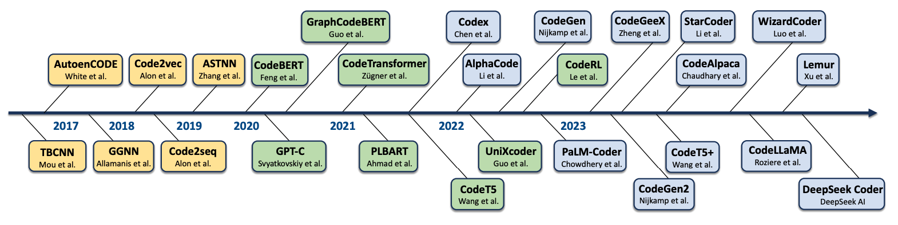
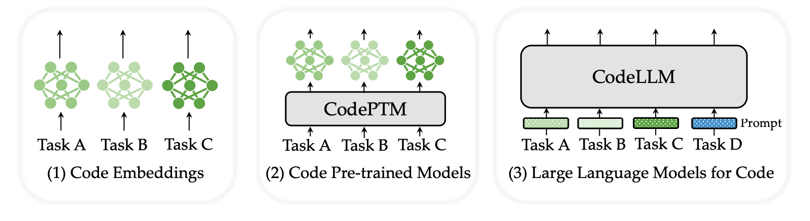

Abstract: Neural Code Intelligence -- leveraging deep learning to understand, generate, and optimize code -- holds immense potential for transformative impacts on the whole society. Bridging the gap between Natural Language and Programming Language, this domain has drawn significant attention from researchers in both research communities over the past few years. This survey presents a systematic and chronological review of the advancements in code intelligence, encompassing over 50 representative models and their variants, more than 20 categories of tasks, and an extensive coverage of over 680 related works. We follow the historical progression to trace the paradigm shifts across different research phases (e.g., from modeling code with recurrent neural networks to the era of Large Language Models). Concurrently, we highlight the major technical transitions in models, tasks, and evaluations spanning through different stages. For applications, we also observe a co-evolving shift. It spans from initial endeavors to tackling specific scenarios, through exploring a diverse array of tasks during its rapid expansion, to currently focusing on tackling increasingly complex and varied real-world challenges. Building on our examination of the developmental trajectories, we further investigate the emerging synergies between code intelligence and broader machine intelligence, uncovering new cross-domain opportunities and illustrating the substantial influence of code intelligence across various domains. Finally, we delve into both the opportunities and challenges associated with this field, alongside elucidating our insights on the most promising research directions.
Overview of Representative Works

Figure 2: A chronological overview of representative works in neural code intelligence over recent years.
Paradigm Shifts

Figure 3: Schematic illustration of different paradigms of applying language models for code to downstream applications.
Results on General Tasks

Figure 4: Results on general tasks.
Results on Symbol+Delegation Tasks

Figure 5: Math Reasoning.
BibTeX
@misc{sun2024ncisurvey,
title = {A Survey of Neural Code Intelligence: Paradigms, Advances and Beyond},
author = {Qiushi Sun and Zhirui Chen and Fangzhi Xu and Kanzhi Cheng and Chang Ma and
Zhangyue Yin and Jianing Wang and Chengcheng Han and Renyu Zhu and Shuai Yuan
and Qipeng Guo and Xipeng Qiu and Pengcheng Yin and Xiaoli Li and Fei Yuan and
Lingpeng Kong and Xiang Li and Zhiyong Wu},
eprint = {2403.14734},
archivePrefix = {arXiv},
year = {2024}
}